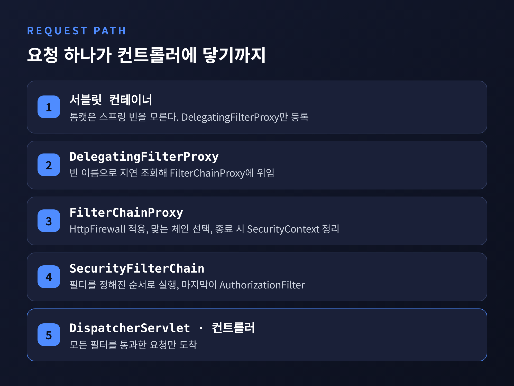
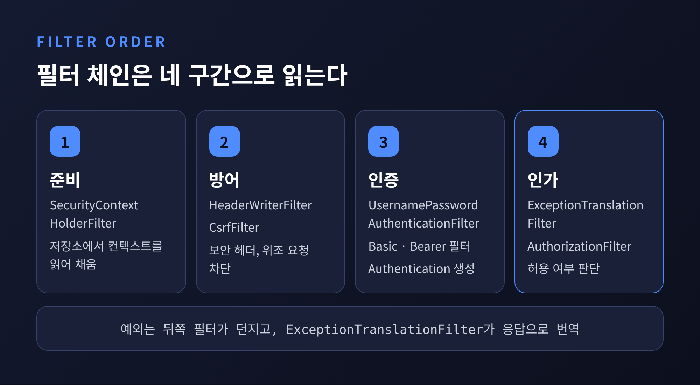
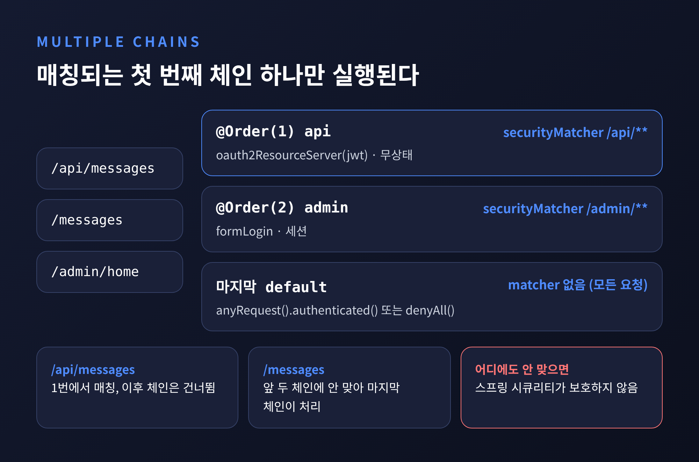
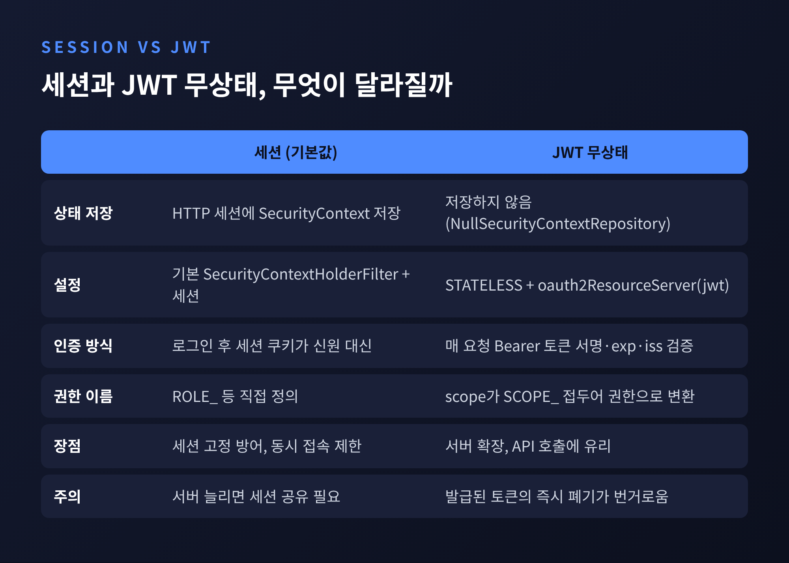
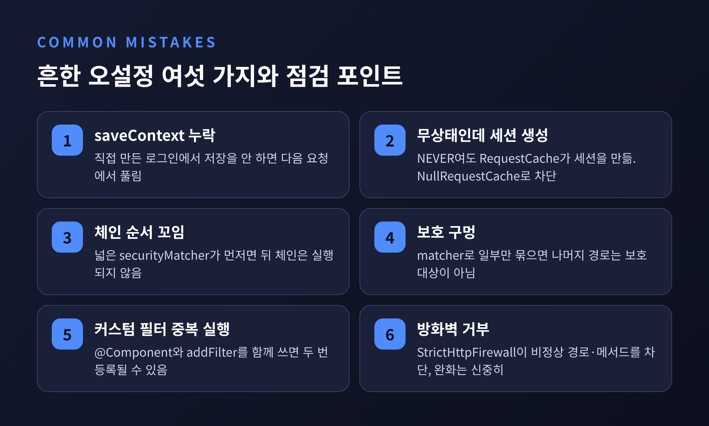

스프링 시큐리티 필터 체인 원리 — 요청 하나는 어떻게 인증과 인가를 통과할까

스프링 시큐리티 필터 체인은 컨트롤러에 닿기 전의 요청을 가로채, 인증 정보를 불러오고 공격을 막고 권한을 따지는 필터들의 줄입니다. 이번 글에서는 요청 하나가 DelegatingFilterProxy에서 시작해 SecurityContext를 거쳐 인가까지 가는 길을 따라가 보겠습니다. 필터 순서, SecurityFilterChain을 여러 개 두는 법, 세션과 JWT 무상태 선택, 흔한 오설정까지 함께 정리합니다.
세 줄로 먼저 답하면 이렇습니다.
- 서블릿 컨테이너는 스프링 빈을 모르므로, DelegatingFilterProxy가 FilterChainProxy라는 스프링 빈에 일을 넘깁니다.
- FilterChainProxy는 요청에 맞는 SecurityFilterChain을 하나만 골라 그 안의 필터를 순서대로 실행합니다.
- 인증은 SecurityContext에 결과를 남기고, 인가는 그 결과를 읽어 허용 여부만 판단합니다.
■ 서블릿 컨테이너에서 스프링 빈까지, 첫 관문
톰캣 같은 서블릿 컨테이너는 자기 방식으로 Filter를 등록합니다. 스프링이 만든 빈은 알지 못합니다. 게다가 컨테이너는 시작하기 전에 필터를 등록해야 하는데, 스프링 빈은 보통 그보다 늦게 올라옵니다.
이 간격을 메우는 것이 DelegatingFilterProxy입니다. 컨테이너에는 이 프록시만 등록해 두고, 실제 요청이 들어올 때 빈 이름으로 스프링 빈 필터를 지연 조회해 일을 넘깁니다. 공식 문서도 빈 조회를 미룰 수 있다는 점을 이 프록시의 장점으로 꼽습니다.
위임받는 대상이 FilterChainProxy입니다. 이름은 비슷하지만 역할은 다릅니다. FilterChainProxy는 스프링 시큐리티 서블릿 지원 전체의 출발점이며, 선택이 아닌 필수 작업도 맡습니다. 요청이 끝나면 SecurityContext를 비워 메모리 누수를 막고, HttpFirewall을 적용해 비정상적인 요청을 걸러냅니다.
서블릿 컨테이너는 URL만 보고 필터를 부릅니다. FilterChainProxy는 RequestMatcher로 요청의 어떤 요소든 기준 삼아 어떤 체인을 쓸지 정합니다.

■ 체인 안의 필터 순서, 무엇이 먼저 실행될까
SecurityFilterChain은 필터들의 정해진 줄입니다. 공식 문서의 기본 설정 시작 로그에는 15개 필터가 나옵니다. 앞쪽부터 보면 이렇습니다.
DisableEncodeUrlFilter, WebAsyncManagerIntegrationFilter, SecurityContextHolderFilter, HeaderWriterFilter, CsrfFilter, LogoutFilter, UsernamePasswordAuthenticationFilter, 이어서 BasicAuthenticationFilter, RequestCacheAwareFilter, AnonymousAuthenticationFilter가 오고, 맨 끝에 ExceptionTranslationFilter와 AuthorizationFilter가 놓입니다.
모두 외울 필요는 없습니다. 흐름은 네 구간으로 읽으면 됩니다.
- 준비 구간: SecurityContextHolderFilter가 저장소에서 SecurityContext를 읽어 SecurityContextHolder에 채웁니다.
- 방어 구간: HeaderWriterFilter가 보안 헤더를 쓰고, CsrfFilter가 위조 요청을 가려냅니다.
- 인증 구간: UsernamePasswordAuthenticationFilter나 Basic, Bearer 토큰 필터가 자격 증명을 Authentication으로 바꿔 검증합니다.
- 인가 구간: 맨 끝의 AuthorizationFilter가 허용 여부를 판단합니다.
특히 ExceptionTranslationFilter의 위치가 중요합니다. 이 필터는 FilterChain.doFilter로 나머지를 먼저 호출하고, 그 안에서 던져진 AccessDeniedException이나 AuthenticationException을 잡아 HTTP 응답으로 번역합니다. 자기보다 뒤에서 일어난 예외만 번역할 수 있으니, AuthorizationFilter 바로 앞에 놓이는 것입니다.
미인증 사용자가 보호된 주소에 오면 이렇게 흘러갑니다. SecurityContextHolder를 비우고, 원래 요청을 RequestCache에 저장하고, AuthenticationEntryPoint가 로그인 페이지 이동이나 WWW-Authenticate 헤더로 자격 증명을 요구합니다. 로그인에 성공하면 RequestCacheAwareFilter가 저장해 둔 요청을 꺼내 재생합니다. 이미 인증됐는데 권한이 모자라면 AccessDeniedHandler가 403을 돌려줍니다.
내 필터를 끼워 넣을 때의 기준도 공식 문서에 있습니다. 악용 방어 필터는 SecurityContextHolderFilter 뒤, 인증 필터는 LogoutFilter 뒤, 인가 필터는 AnonymousAuthenticationFilter 뒤에 두라는 것입니다.

■ SecurityContext는 어떻게 사용자를 기억할까
인증 필터가 하는 일은 단순합니다. 요청에서 자격 증명을 꺼내 Authentication 객체를 만들고, AuthenticationManager(구현체는 ProviderManager)에 넘깁니다. ProviderManager는 AuthenticationProvider 목록을 돌며 성공, 실패, 판단 불가 중 하나의 답을 받습니다. 성공하면 비밀번호 같은 민감한 자격 증명을 기본으로 지운 Authentication이 돌아옵니다.
이 결과가 놓이는 곳이 SecurityContextHolder입니다. 기본 저장 방식은 ThreadLocal이라, 같은 스레드의 어느 메서드에서든 인자 없이 현재 사용자를 꺼낼 수 있습니다. ThreadLocal은 요청이 끝나고 스레드를 비워야 안전한데, 그 청소를 FilterChainProxy가 책임집니다. 스레드 풀의 스레드가 다음 사용자에게 전 사용자의 신원을 물려주는 사고를 막는 장치입니다.
여기서 한 번 짚어 둘 변화가 있습니다. 예전엔 SecurityContextPersistenceFilter가 요청 끝에 컨텍스트를 자동으로 저장했습니다. 지금은 SecurityContextHolderFilter가 읽기만 하고, 저장은 개발자가 SecurityContextRepository에 명시적으로 합니다. 공식 문서는 자동 저장이 요청이 끝나기 전에 일어나 사용자를 놀라게 할 수 있었다고 설명합니다. 스프링 시큐리티 6부터의 기본 동작이며, 한 애플리케이션에는 두 필터 중 하나만 있어야 합니다.
직접 로그인 컨트롤러를 짠다면 이 점을 꼭 기억하셔야 합니다.
SecurityContext context = SecurityContextHolder.createEmptyContext();
context.setAuthentication(authentication);
SecurityContextHolder.setContext(context);
securityContextRepository.saveContext(context, request, response); // 빠뜨리면 다음 요청에서 로그아웃 상태
■ 인가는 마지막에, 첫 번째로 맞는 규칙 하나만
AuthorizationFilter는 SecurityContextHolder에서 Authentication을 꺼낼 Supplier를 만들고, 요청과 함께 AuthorizationManager에 넘깁니다. 매니저는 authorizeHttpRequests의 패턴 중 맞는 규칙을 찾아 실행합니다. 거부되면 AccessDeniedException을 던지고, 앞서 본 ExceptionTranslationFilter가 이를 받아 401이나 403으로 바꿉니다.
규칙은 위에서 아래로 읽다가 첫 번째로 맞는 하나만 적용됩니다.
http.authorizeHttpRequests(auth -> auth
.requestMatchers("/admin/**").hasRole("ADMIN")
.requestMatchers("/css/**").permitAll()
.anyRequest().authenticated() // 나머지는 인증 필수
);
매칭되지 않은 주소를 막는 방식이 안전한 허용 목록이라고 문서도 권합니다. 정적 리소스도 ignoring 대신 permitAll을 쓰라는 안내가 있습니다. 요청을 무시하면 보안 헤더를 쓸 수 없기 때문입니다. 예전엔 매 요청 세션을 조회하는 비용이 문제였지만, 6 이후로는 규칙이 필요할 때만 세션을 확인합니다.
한 가지 더 있습니다. AuthorizationFilter는 REQUEST뿐 아니라 FORWARD, ERROR 같은 모든 dispatch에서 실행됩니다. 뷰 템플릿으로 포워드하거나 오류 페이지로 넘어갈 때 예상치 못한 403이 나온다면 이 때문일 수 있습니다. 이때는 dispatcherTypeMatchers(FORWARD, ERROR).permitAll()로 풀어 줍니다.
■ SecurityFilterChain을 여러 개 두는 법
관리자 화면은 폼 로그인, API는 Bearer 토큰처럼 영역마다 인증 방식이 다를 때 체인을 나눕니다. SecurityFilterChain 빈을 여러 개 등록하면 됩니다.
@Bean @Order(1)
SecurityFilterChain api(HttpSecurity http) throws Exception {
http.securityMatcher("/api/**")
.authorizeHttpRequests(a -> a.anyRequest().authenticated())
.oauth2ResourceServer(o -> o.jwt(Customizer.withDefaults()));
return http.build();
}
@Bean
SecurityFilterChain web(HttpSecurity http) throws Exception {
http.authorizeHttpRequests(a -> a.anyRequest().authenticated())
.formLogin(Customizer.withDefaults());
return http.build();
}
핵심 규칙은 하나입니다. 매칭되는 첫 번째 체인만 실행됩니다. /api/**는 첫 체인에서 끝나고, 나머지는 @Order가 없어 맨 뒤로 가는 두 번째 체인이 받습니다.
주의할 점이 세 가지 있습니다.
- securityMatcher는 체인이 맡을 요청의 범위이고, requestMatchers는 그 체인 안의 개별 인가 규칙입니다. 둘은 다릅니다.
- 어떤 체인에도 맞지 않는 요청은 스프링 시큐리티가 보호하지 않습니다. securityMatcher 없는 체인을 하나 두거나, 마지막에 anyRequest().denyAll() 체인을 두는 편이 안전합니다.
- 앞 체인이 먼저 가져간 경로는 뒤 체인에 영영 닿지 않습니다. 공식 문서도 /approvals/ 경로 사례로 이 함정을 경고합니다.
참고로 스프링 부트는 SecurityFilterChain 빈을 하나라도 등록하면 기본 웹 보안 설정을 통째로 끕니다. 액추에이터 보안까지 포함해서입니다.

■ 세션이냐 JWT 무상태냐, 무엇이 달라질까
기본값은 세션입니다. 스프링 시큐리티는 보안 컨텍스트를 HTTP 세션에 저장합니다. 로그인할 때 세션 ID를 바꿔 세션 고정 공격을 막고, maximumSessions로 동시 접속 수도 제한할 수 있습니다. 브라우저가 쿠키를 알아서 들고 다니니 편합니다. 다만 세션은 서버가 기억하는 상태이므로, 서버를 여러 대로 늘리면 세션 공유 문제가 따라옵니다.
무상태로 가려면 SessionCreationPolicy.STATELESS를 씁니다. 이 설정은 NullSecurityContextRepository를 사용해 컨텍스트를 저장하지 않고, 요청도 세션에 저장하지 않게 합니다. 매 요청마다 토큰을 들고 와 새로 인증하는 방식입니다.
JWT 리소스 서버의 흐름은 이렇습니다. Bearer 토큰 인증 필터가 토큰을 BearerTokenAuthenticationToken으로 감싸 ProviderManager에 넘기고, JwtAuthenticationProvider가 JwtDecoder로 서명과 만료를 검증합니다. 공식 문서 기준으로 서명은 인증 서버가 공개한 키로, exp, nbf, iss는 각각 시간과 발급자 검사로 확인합니다. 토큰의 scope 값은 SCOPE_ 접두어가 붙은 권한이 됩니다. 그래서 hasAuthority("SCOPE_messages")처럼 접두어를 포함해 써야 합니다.
| 구분 | 세션 | JWT 무상태 |
|---|---|---|
| 상태 저장 | 서버 세션에 SecurityContext 저장 | 저장하지 않음, 매 요청 토큰 검증 |
| 설정 | 기본값 | STATELESS + oauth2ResourceServer(jwt) |
| 장점 | 즉시 무효화, 동시 접속 제어 | 서버 확장과 API 호출에 유리 |
| 부담 | 서버 확장 시 세션 공유 | 발급된 토큰의 즉시 폐기가 번거로움 |
마지막 줄은 공식 문서의 직접 서술이 아니라, 서버가 상태를 갖지 않는다는 구조에서 따라오는 일반적인 성질입니다.
CSRF도 따로 판단해야 합니다. 공식 문서는 브라우저 트래픽을 처리하지 않는 백엔드라면 CSRF를 끌 수 있다고 안내하고, 브라우저 트래픽도 받는다면 보호를 유지하라고 합니다. 토큰을 브라우저 어디에 둘지에 따른 판단은 이 문서만으로는 확인되지 않으니, 서비스 구조에 맞춰 따로 검토하시길 권합니다.

■ 흔한 오설정 여섯 가지
실제 현장에서 자주 마주치는 실수를 문서 근거와 함께 추려 보았습니다.
- 로그인은 되는데 다음 요청에서 풀립니다. 직접 만든 로그인 로직에서 saveContext를 빠뜨렸거나, 세션이 필요한데 STATELESS로 둔 경우입니다.
- 무상태라 했는데 세션이 생깁니다. NEVER여도 인증 후 재요청을 위해 요청이 세션에 저장되기 때문입니다. NullRequestCache로 막을 수 있습니다.
- 체인 순서가 꼬입니다. 넓은 securityMatcher의 체인이 먼저 평가되면 뒤 체인은 영영 실행되지 않습니다.
- 보호되지 않는 구멍이 생깁니다. securityMatcher로 일부 경로만 묶고 나머지를 비워 두면 그 경로는 보호 대상이 아닙니다.
- 커스텀 필터가 두 번 실행됩니다. 필터를 빈(@Component)으로 만들고 addFilterBefore로도 추가하면, 컨테이너 등록과 보안 체인 등록이 겹칠 수 있습니다. 이 항목은 공식 문서가 아니라 커뮤니티 질의응답에서 확인한 사례입니다. @Component를 빼거나 FilterRegistrationBean으로 자동 등록을 끄는 방법이 제시됩니다.
- 요청이 방화벽에서 거절됩니다. 기본 StrictHttpFirewall은 정규화되지 않은 요청과 허용 목록 밖의 HTTP 메서드를 거부하고, 세미콜론 허용은 설정으로 풀 수 있습니다. 다만 문서는 완화하면 공격에 노출될 수 있다고 경고합니다.

정리하면 이렇습니다. 요청은 DelegatingFilterProxy에서 FilterChainProxy로, 맞는 체인 하나로, 그 안의 필터를 차례로 지나 마지막에 인가 판단을 받습니다. 이 흐름만 머릿속에 있으면 로그만 보고도 어느 필터에서 요청이 멈췄는지 짐작할 수 있습니다.
저는 설정을 늘리기 전에 로그에 찍힌 필터 목록부터 확인하는 편을 권합니다.
"인증은 컨텍스트에 남기고, 인가는 컨텍스트를 읽는다."
필터 하나하나를 외우지 못하더라도, 이 한 줄이 어디서 막혔는지 찾는 길잡이가 되어 주리라 생각합니다.
※ 이 글은 스프링 시큐리티 공식 문서(6 이후 기준 서술, 7.x 페이지 확인)를 바탕으로 정리했으며, 필터 목록은 문서 예시 로그 기준이라 설정과 버전에 따라 달라질 수 있습니다. 코드 예시는 문서 예제를 바탕으로 줄여 쓴 것으로 직접 실행해 검증한 것은 아닙니다.
#스프링시큐리티 #SpringSecurity #필터체인 #SecurityFilterChain #JWT #세션인증 #스프링부트 #백엔드개발 #인증인가